Notion 문서를
질문과 복습으로 연결하는 RAG
Notion 문서를 수집하고 검색·질의응답·퀴즈 생성·채점·학습 통계까지 하나의 흐름으로 연결한 1인 개발 프로젝트다. 검색 결과의 출처와 대화 이력을 보존해 문서 기반 학습을 이어갈 수 있게 했다.
1. 문제 정의
쌓여 있는 Notion 문서를 다시 읽는 데서 끝내지 않고, 필요한 내용을 검색하고 질문하고 문제로 복습하는 하나의 학습 경험으로 만들 수 있을까?
Notion 문서 수집 → Markdown·이미지 저장 → 임베딩 → 근거 기반 채팅 → 퀴즈 → 결과·통계문서를 서비스 내부 데이터로 가져오는 Documents, 저장된 문서를 근거로 답하는 Ask AI, 선택 문서에서 문제를 만드는 Quiz, 채점과 결과를 저장하는 Results, 이전 학습 흐름을 다시 보는 History를 하나의 서비스로 구성했다.
2. 프로젝트 소개
Notion 문서를 수집하고 검색과 질의응답, 퀴즈 생성과 결과 관리까지 하나의 학습 흐름으로 연결한 AI 기반 지식 활용 시스템이다.
담당 범위
- 개인 프로젝트, 1인 개발
- 기획
- FastAPI 백엔드
- Next.js 프론트엔드
- Qdrant 기반 RAG 및 실시간 AI 채팅 구현
다섯 개의 사용자 흐름
- Documents: Notion 문서 수집·목록화·사용자별 관리
- Ask AI: 문서 검색과 문맥 반영 질의응답
- Quiz: 문서 핵심 내용 기반 문제 자동 생성
- Results: 답안 채점·점수 계산·결과 저장
- History: 학습 이력과 이전 퀴즈 상세 조회
3. 전체 구현 기능
{kind=link}
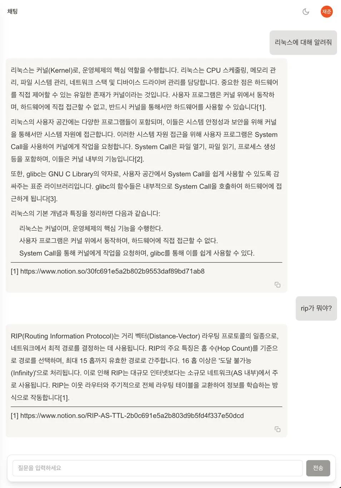
{kind=link}
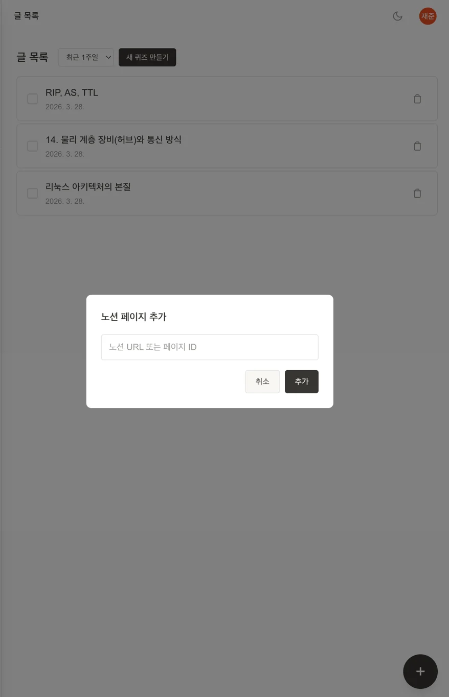
{kind=link}
{kind=link}
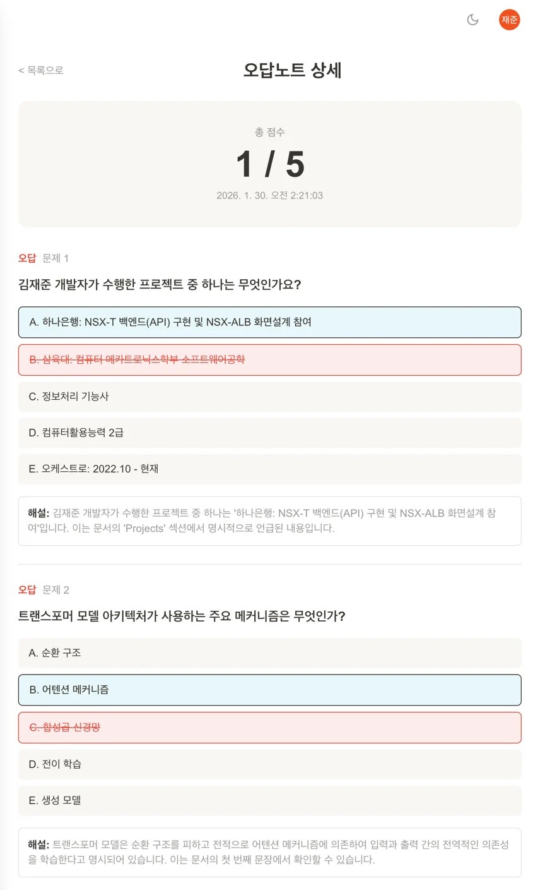
{kind=link}
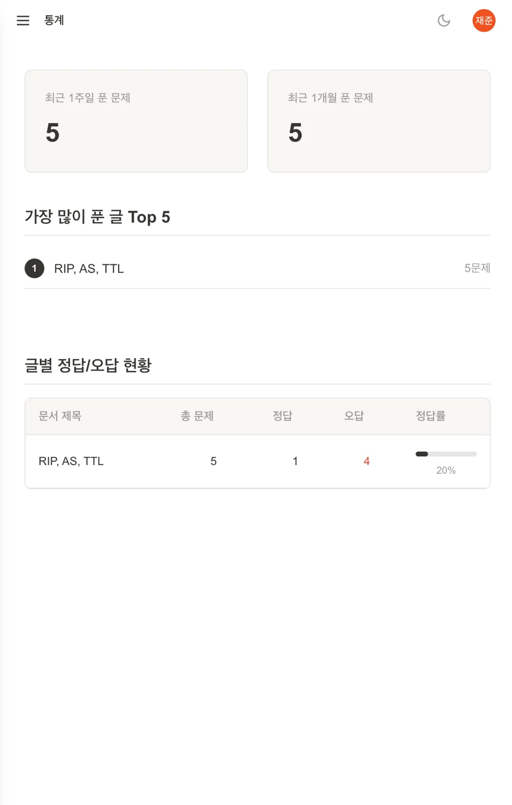
{kind=link}
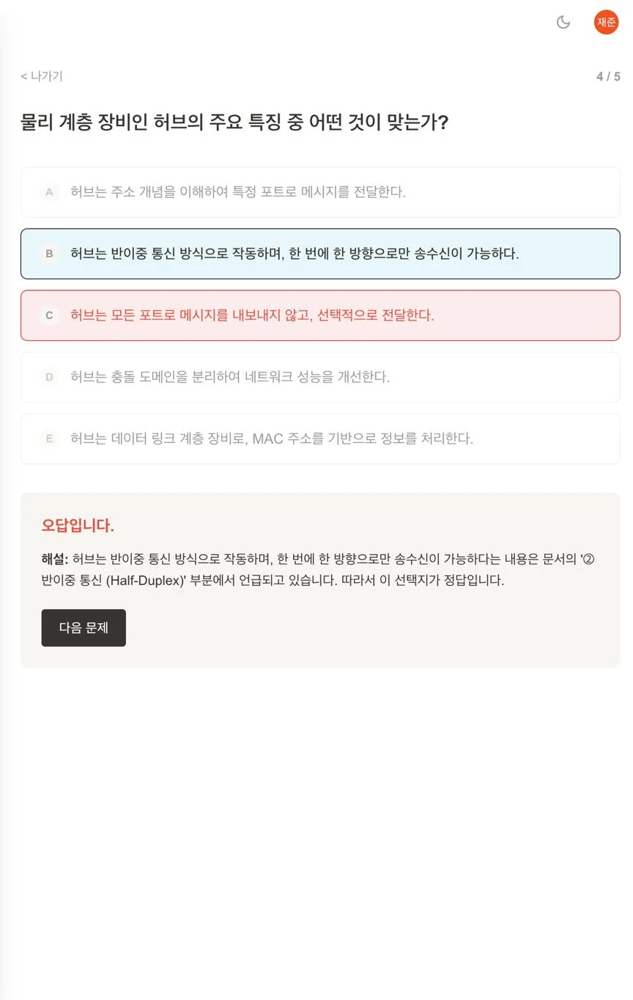
4. 시스템 아키텍처
Next.js가 FastAPI를 호출하고, PostgreSQL은 문서·사용자·대화·학습 이력을, Qdrant는 임베딩과 벡터 검색을 담당한다.
사용자는 문서 URL 또는 페이지 ID를 입력해 수집을 시작한다. Backend는 문서 본문과 이미지를 저장하고 임베딩을 생성하며, 이후 채팅과 퀴즈가 같은 문서 데이터 소스를 공유한다. 실시간 채팅은 WebSocket으로 응답을 스트리밍하고 메시지 이력은 PostgreSQL에 저장한다.
인증과 Frontend
- User → Next.js / React Frontend
- Google OAuth를 통한 Google Login
- 문서·채팅·퀴즈·결과·통계 화면 제공
FastAPI Backend가 연결하는 서비스
- PostgreSQL: 사용자·문서·퀴즈·채팅 기록
- Qdrant: 문서 임베딩과 유사도 검색
- OpenAI API: 답변 생성과 퀴즈 생성
- Notion: 문서 수집과 파싱
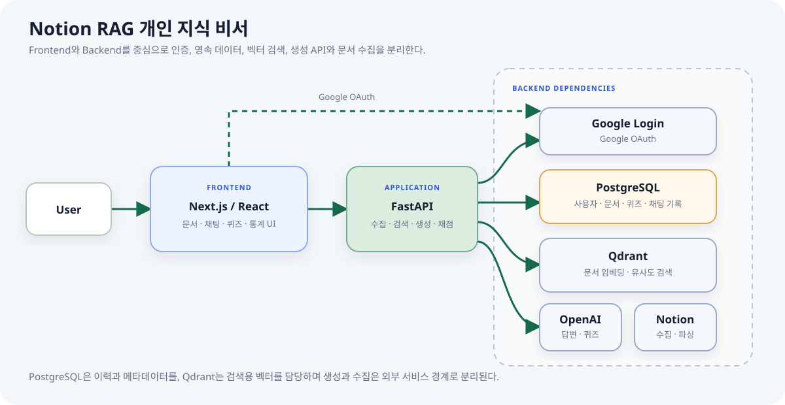
5. Notion 문서 수집과 임베딩
원문 구조를 가능한 한 유지하면서 서비스가 검색할 수 있는 데이터로 변환한다.
문서 메타데이터와 변환된 본문은 PostgreSQL에 저장하고, 본문 기반 임베딩은 Qdrant에 적재한다. 문서 안의 이미지는 별도 저장한 뒤 Markdown 본문에서 다시 연결해 상세 화면에서도 원문과 가까운 형태로 볼 수 있게 했다.
글 목록에서 문서 추가
- Notion URL 또는 페이지 ID만 입력해 별도 복사·붙여넣기 없이 등록
- Backend가 페이지를 수집하고 본문을 Markdown으로 변환
- 문서 이미지를 별도로 저장하고 본문과 다시 연결
- 원문 구조를 최대한 유지해 상세 화면에서 다시 확인
- 임베딩 후 RAG 채팅과 문서 검색의 공통 데이터 소스로 사용
파이프라인 단계
- Frontend → FastAPI
/notion/fetch수집 요청 - Notion 문서 수집과 HTML 파싱
- 이미지 저장과 Markdown 변환
- PostgreSQL에 문서 메타데이터·본문 저장
- Embedding 생성 후 Qdrant에 문서 벡터 저장
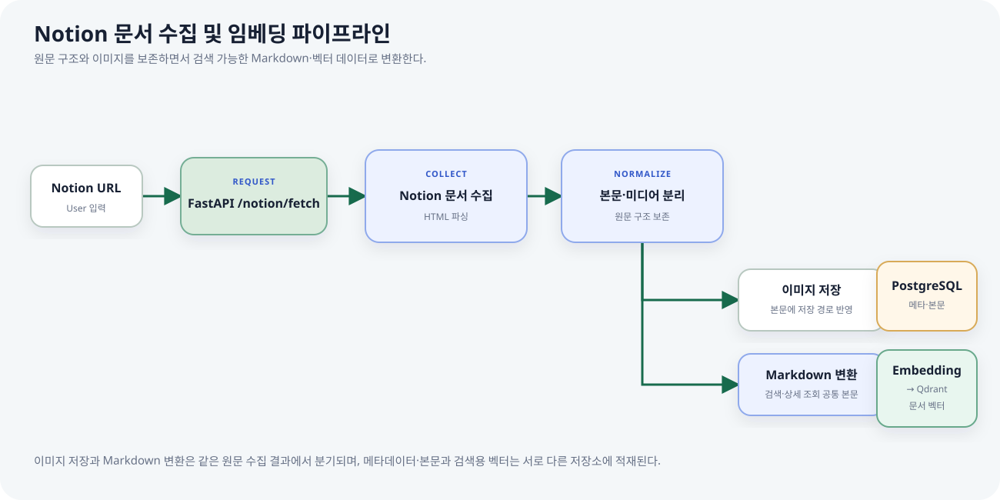
{kind=link}
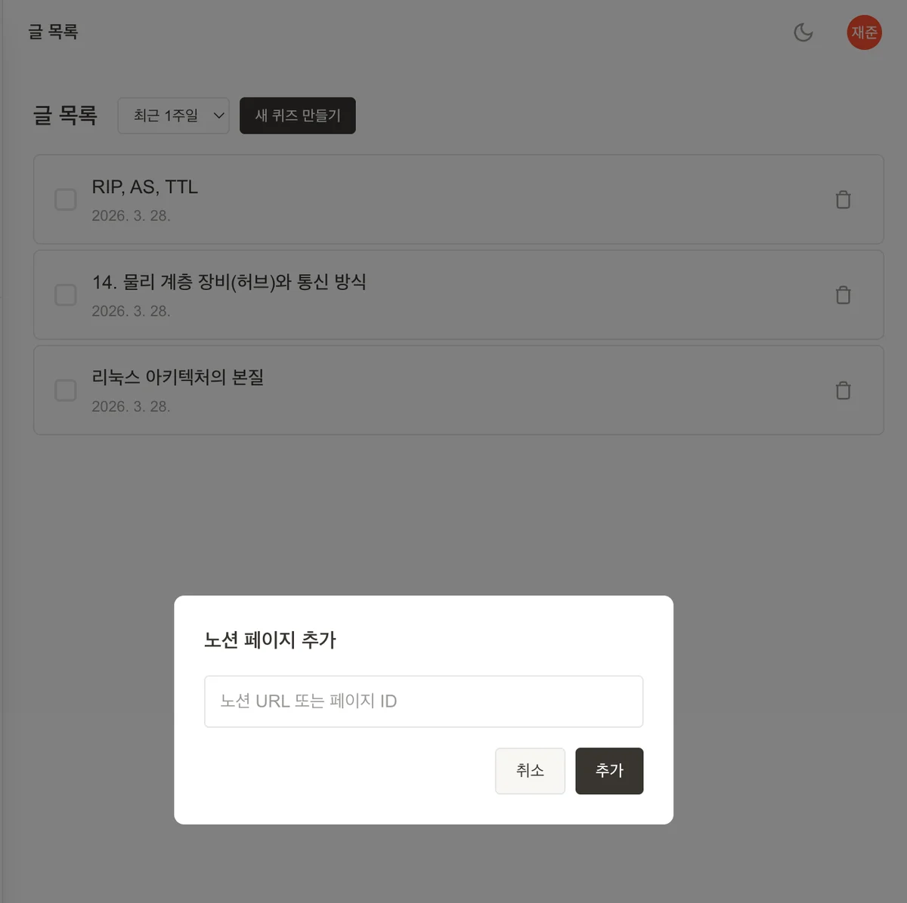
6. 근거 기반 실시간 RAG 채팅
질문 전송 → Qdrant 관련 문서 검색 → 답변 Context 구성 → OpenAI 응답 → WebSocket 스트리밍 → 메시지 저장질문과 연관된 문서를 벡터 검색으로 찾고, 검색 결과를 답변용 Context로 구성한다. 생성된 답변 아래에는 참고한 Notion 문서 링크를 함께 제공해 사용자가 출처를 직접 확인할 수 있게 했다. 채팅방과 메시지 이력을 저장하므로 이전 질문의 흐름을 유지한 연속 질의응답도 가능하다.
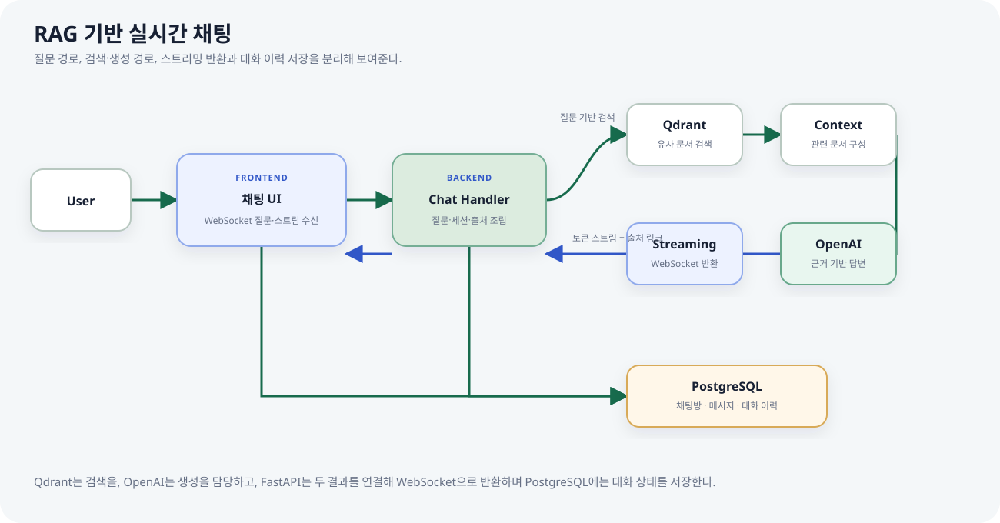
- Frontend에서 사용자 질문을 WebSocket으로 전송해 실시간 채팅을 시작한다.
- FastAPI Chat Handler가 질문 기반 유사 문서 검색을 요청한다.
- Qdrant에서 질문과 연관된 문서를 찾아 답변용 Context를 구성한다.
- OpenAI API가 Context 기반 답변을 생성하고 스트리밍 형태로 전달한다.
- 답변 아래에 참고한 Notion 문서 링크를 제공한다.
- 채팅방 정보와 메시지를 PostgreSQL에 저장해 대화 이력을 관리한다.
{kind=link}
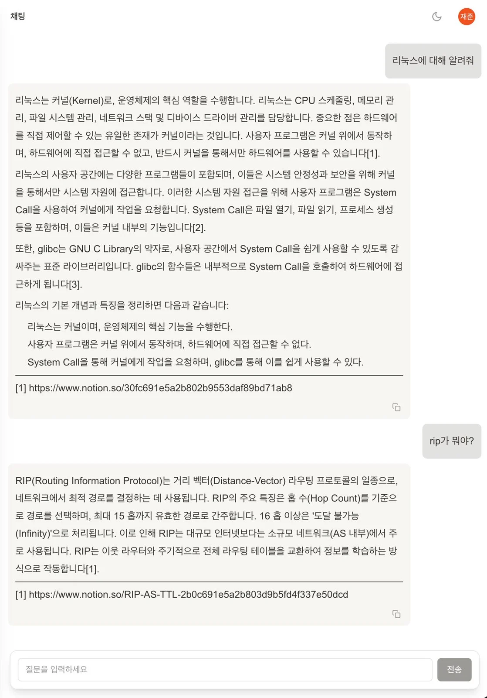
7. 선택 문서 기반 퀴즈·채점
검색과 답변에서 끝내지 않고, 사용자가 선택한 문서의 핵심 내용을 문제로 다시 확인한다.
- 사용자가 특정 문서를 선택하거나 최근 문서를 기준으로 퀴즈 생성을 요청한다.
- FastAPI
/quiz/generate가 PostgreSQL에서 대상 문서를 조회한다. - OpenAI API가 각 문서의 핵심 내용을 기반으로 객관식 문제·정답·해설을 생성한다.
- Frontend가 문제를 표시하고 사용자가 답안을 제출한다.
- Backend가 점수를 계산하고 PostgreSQL에 퀴즈 결과를 저장한다.
- Statistics API가 저장된 결과를 바탕으로 문서별 정답률과 풀이 수를 조회한다.
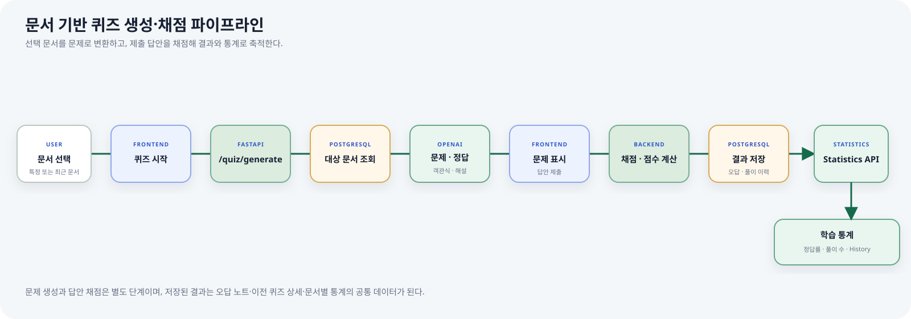
글 목록에서 여러 문서를 선택해 원하는 범위만 집중 학습할 수 있고, 답안을 선택하면 정오를 즉시 시각적으로 표시한다. 문제별 해설은 단순 평가를 넘어 왜 정답인지 바로 복습할 수 있게 한다.
{kind=link}
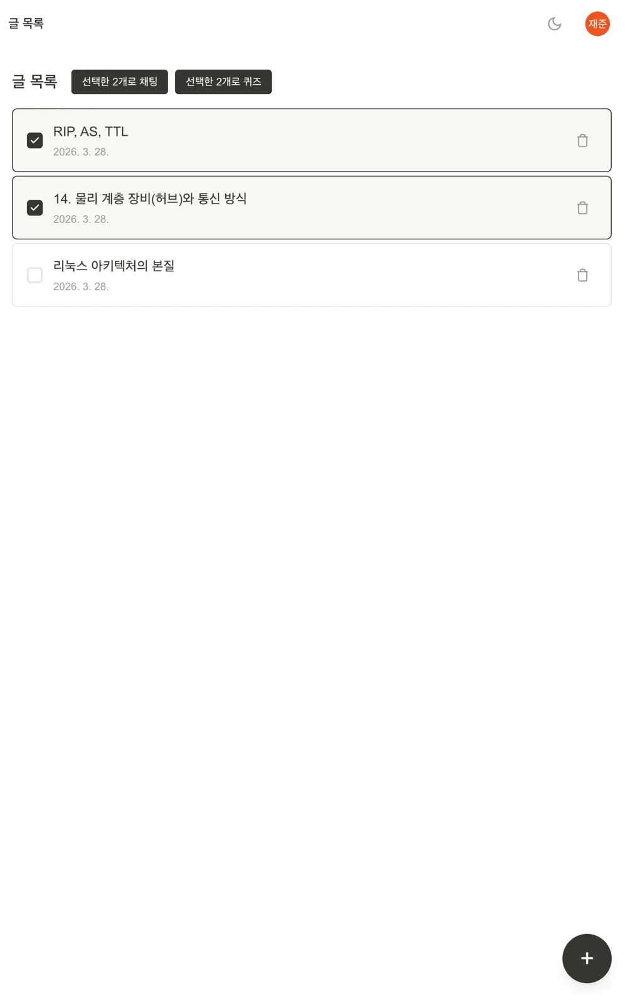
{kind=link}
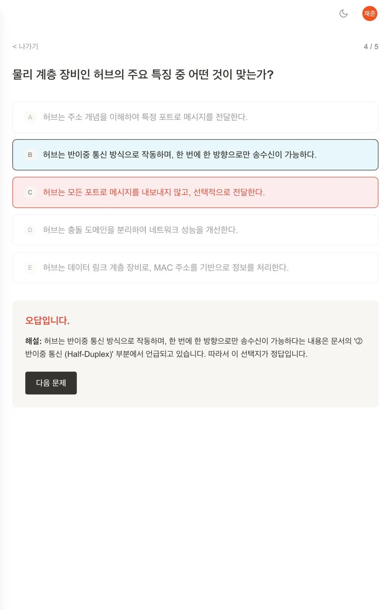
8. 결과·오답 노트·학습 이력
퀴즈 결과를 단발성 응답으로 끝내지 않고 저장해, 틀린 문제와 문서별 학습 상태를 다시 확인할 수 있도록 연결했다.
Results
- 답안 채점과 점수 계산
- 제출 결과 저장
- 문제별 정답 여부와 해설 표시
오답 노트
- 틀린 문제를 다시 조회
- 선택 답안과 정답·해설 비교
- 문서 내용으로 돌아가는 복습 흐름
학습 통계
- 문서별 정답률
- 문서별 풀이 수
- 저장된 결과 기반 학습 상태 확인
History
- 학습 이력 목록
- 이전 퀴즈 상세 조회
- 과거 결과와 해설 재확인
9. 현재 확인되는 한계
| 현재 범위 | 추가로 필요한 검증 |
|---|---|
| 벡터 검색 결과를 Context로 사용하는 RAG | 검색 Precision·Recall, 질문 유형별 Hit rate와 답변 충실도 평가 |
| 출처 문서 링크를 제공하는 생성 답변 | 문장 단위 인용과 근거 없는 생성 탐지 |
| LLM 기반 객관식 문제·해설 생성 | 정답의 유일성, 난이도와 문서 충실도를 확인하는 품질 기준 |
| 개인 문서 수집과 사용자별 관리 | 권한 변경·삭제 동기화, 데이터 보존 정책과 다중 사용자 격리 검증 |
따라서 이 프로젝트의 강점은 새로운 검색 알고리즘 연구가 아니라 문서 수집·저장·벡터 검색·생성·출처·복습 이력을 하나의 실제 사용 흐름으로 연결한 AI 애플리케이션 설계에 있다.